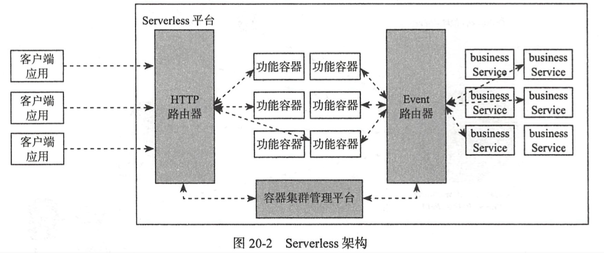

| Title | Date | Modified | Category |
|---|---|---|---|
| micros | 2019-05-29 12:00 | 2019-05-29 12:00 | micros |
1. Serverless
1.1. 概述

Serverless下包含的两个概念：
- 函数即服务，即Function as a Service，简称FaaS
- 后端即服务，即Backend as a Service，简称BaaS。
目前，Serverless平台主要分为三大类：
- 公有云上的功能即服务（Functions as a Service，FaaS）解决方案。
- 运行在共有和私有数据中心的Serverless框架，如Fission运行在Kubernetes上，Funktion运行在Kubernetes上，IBM OpenWhisk运行在Docker上。
- 提供agnostic应用接口或/和现有Serverless框架增值服务的包装框架，如Serverless.com支持AWS Lambda，Apex支持AWS Lambda。
Serverless适用场景:
- 应用负载变化显著的场景
- 基于事件驱动的算法服务化场景
- 基于事件驱动的数据分析服务化场景
- 基于事件驱动的数据服务化场景
- 低频请求场景